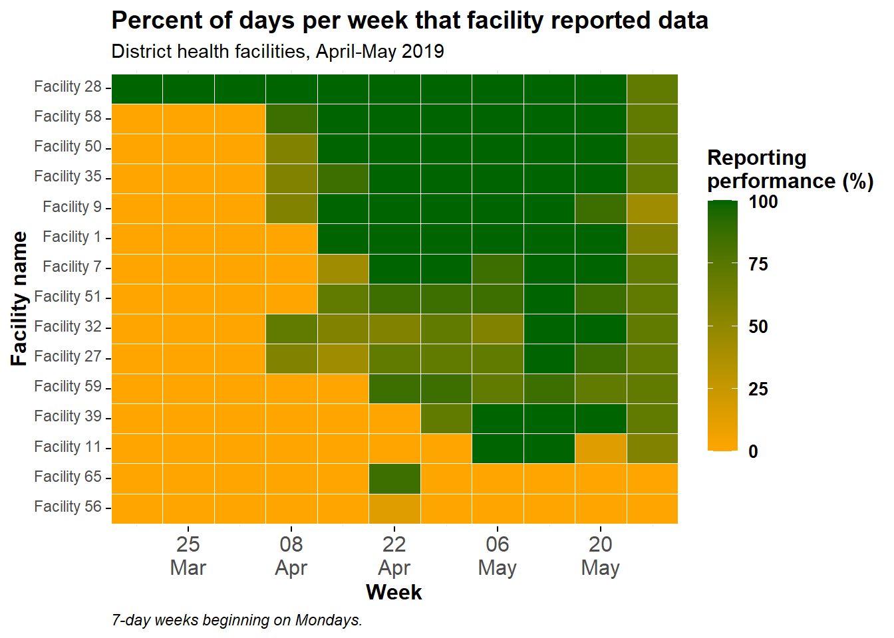
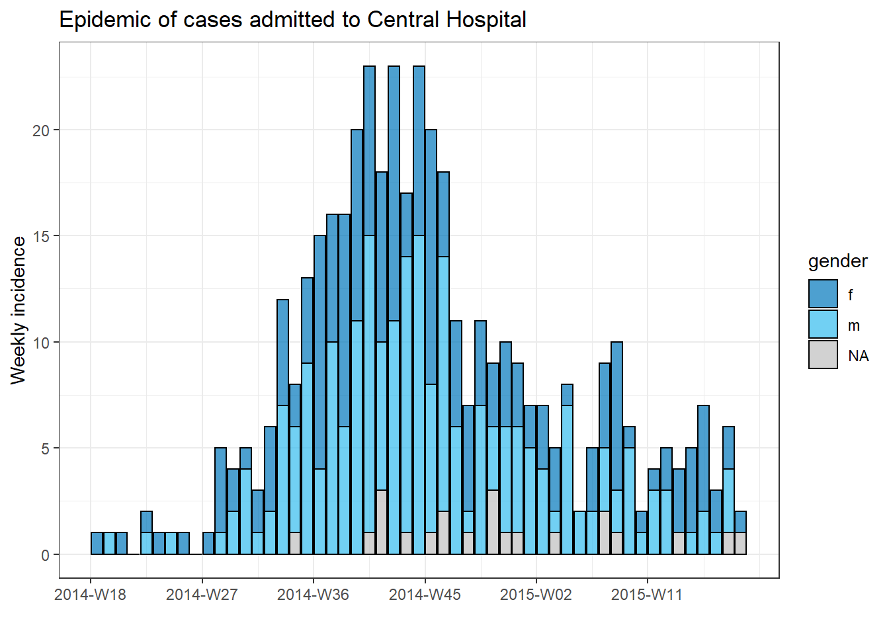
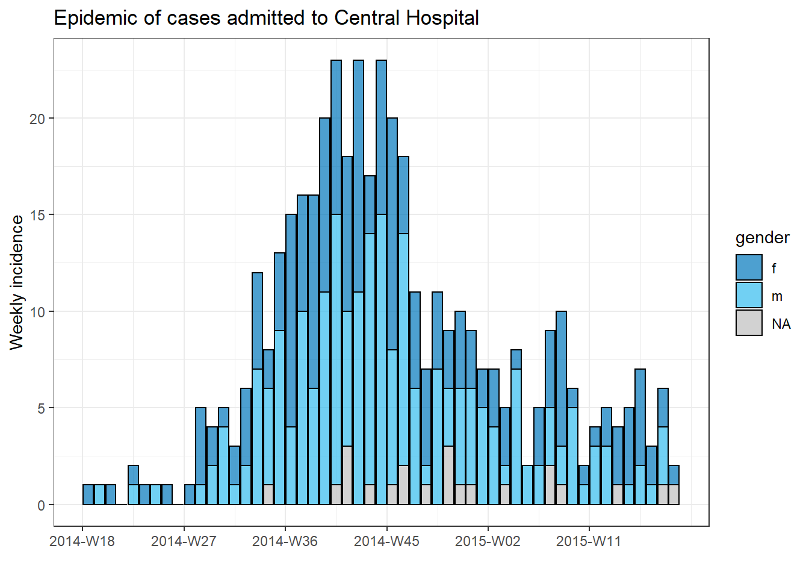

15 Iteration and loops
15.1 Preparation
Load packages
pacman::p_load(
rio,
here,
purrr,
tidyverse
)Load data
# fake import the linelist
linelist <- rio::import("linelist_cleaned.xlsx")The first 50 rows are displayed:
15.2 for loops
As an epidemiologist, it is a common need to repeat analyses on sub-groups (e.g. jurisdictions or sub-populations). Iterating with a for loop is one method to automate this process.
For example, let’s say we are making epidemic curves. We can make an epidemic curve (LINK) of all the cases:
# create 'incidence' object
outbreak <- incidence2::incidence(
linelist, # dataframe
date_index = date_onset, # date column
interval = "week", # aggregate counts weekly
groups = gender, # group values by gender
na_as_group = TRUE) # missing gender is own group## 241 missing observations were removed.
# plot epi curve
plot(outbreak, # name of incidence object
fill = "gender", # color bars by gender
color = "black", # outline color of bars
title = "Outbreak of ALL cases" # title
)To produce a separate plot for each hospital’s cases, we can put this code within a for loop. The elementary syntax is: for (item in vector) {do something}.
- The “item” can be any word you wish. Keep it short. Often “i” is used.
- The word “in” is special and must be present.
- The vector can be character, as in this example, but is more often numeric (
c(1,2,3,4,5...)) so that it can be used with index brackets[[x]]to extract and save. See subsequent example below.
First, we save a named vector of the unique hospital names, hospital_names. The for loop will run once for each of these names (for (hosp in hospital_names) { and each time the current hospital name will be represented as “hosp” for use within the loop.
- In the loop, a
filter()is applied tolinelist, such that columnhospitalmust equal the current value ofhosp
- The incidence object is created on the filtered linelist
- The plot for the current hospital is created, with an auto-adjusting title
- The plot for the current hospital is temporarily saved and then printed
- The loop then moves onward to repeat with the next hospital in
hospital_names
# make vector of the hospital names
hospital_names <- unique(linelist$hospital)
# for each name ("hosp") in hospital_names, create and print the epi curve
for (hosp in hospital_names) {
# create incidence object specific to the current hospital
outbreak_hosp <- incidence2::incidence(
linelist %>% filter(hospital == hosp), # linelist is filtered to the current hospital
date_index = date_onset,
interval = "week",
groups = gender,
na_as_group = TRUE
)
# Create and save the plot. Title automatically adjusts to the current hospital
plot_hosp <- plot(outbreak_hosp,
fill = "gender",
color = "black",
title = stringr::str_glue("Epidemic of cases admitted to {hosp}")
)
# print the plot for the current hospital
print(plot_hosp)
} # end the for loop when it has been run for every hospital in hospital_names 
 


When “i” is a number:
What is “i”?
Often in loops it is useful to have the iterating “item” be a number - this allows indexing [[x]] to assign or extract. This is often written “i”.
Here is the above for loop, but written so that the vector is numeric c(1,2,3,4,5,6) and the hospital names are extracted from hospital_names with this indexing number (e.g. hospital_names[[2]])
hospital_names <- unique(linelist$hospital)
for (i in seq_along(hospital_names)) {
outbreak_i <- incidence2::incidence(
linelist %>% filter(hospital == hospital_names[[i]]),
date_index = date_onset,
interval = "week",
groups = gender,
na_as_group = TRUE
)
plot_i <- plot(outbreak_i,
fill = "gender",
color = "black",
title = stringr::str_glue("Epidemic of cases admitted to {hospital_names[[i]]}"))
print(plot_i)
}15.2.1 Tracking progress of a loop
In a loop with many iterations it can run for minutes or even hours. Thus, it can be helpful to print the progress to the R console.
Below, code is placed within the loop to print every 100th number.
# loop with code to print progress every 100 iterations
for (row in 1:nrow(linelist)){
# print progress
if(row %% 100==0){
print(row)
}15.3 purrr
TO DO - Under construction
To iterate a function over columns in a dataframe:
The R for Data Science page on iteration
A purrr tutorial